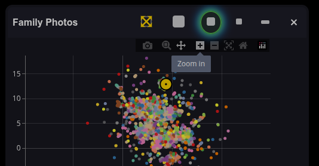
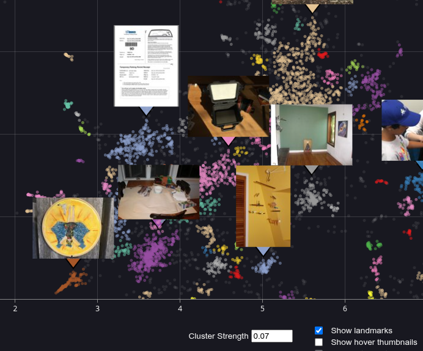

Semantic Map
The PhotoMapAI semantic map is a graphical representation of the relationships among all the photos/images in an album. Each image is represented by a dot. Images that are similar will be closer together on the map than dissimilar images. The semantic map is linked to the main image display. The location of the current image is shown on the semantic map as a yellow target icon. Clicking on an image dot anywhere in the map will bring the full-resolution photo/image into view in the main display. Hovering over an image dot will pop up a thumbnail of the image, allowing you to rapidly explore the image landscape.

The Clustering Process
The semantic map is generated in two phases. In the first phase, which is performed when the album's index is created or updated, each image is compressed into a high-dimensional representation of its contents called an "embedding." The embeddings are then projected onto a 2D X-Y plot using the UMAP dimensionality-reduction algorithm. UMAP is able to preserve the topological relationships among embeddings. Two embedding points that are close together on the UMAP are more semantically similar than two that are far apart.
In the second phase, PhotoMapAI applies an algorithm known as DBSCAN Density-Based Spatial Clustering of Applications with Noise to partition the map into multiple clusters of highly-related images. Each cluster is then assigned an arbitrary color for visualization. The clustering process is quick and happens automatically the first time you open the semantic map window on a particular album.
Tuning Clusters
The overall topology of the semantic map is fixed during the indexing process, but the clustering phase can be adjusted on the fly. At the bottom of the semantic map window is a field labeled "Cluster Strength," and contains a floating point value ranging from 0.0 to 1.0. This parameter (technically called epsilon, or "eps") controls the clustering size. Higher values of eps will create a smaller number of large clusters, while lower values will create a larger number of small clusters.

The default value of eps is 0.07, which empirically seems to work well for collections of a few tens of thousands of photographs. For smaller collections, you may wish to increase eps to 0.1 through 0.5. If the eps is too low, you may also see a lot of unclustered images, which are represented as faint gray dots. If you initially don't see much when you pull up the semantic map, gradually increase the "Cluster Strength" field until the display is satisfactory.
Interpreting Clusters
What does "semantically similar" mean? Embeddings capture many different aspects of an image, ranging from low-level features such as brightness and color palette, to high-level features such as particular people and places. This can lead to interesting appositions. For example, say you have three photos depicting (1) Mary at the playground; (2) Mary at a birthday party; and (3) Timmy at a birthday party. (1) and (2) will mapped close together because they share the same subject, Mary. (2) and (3) will be close together because they share the same event, a birthday party. Because of these relationships, (1) and (3) will also likely be close together as well, but further apart than either of the other two pairs.
Therefore you will find clusters that contain a mixture of relationships. Sometimes you will find yourself scratching your head to figure out why several images cluster together, but more often you'll discover delightfully unexpected groupings. For example, my family photo collection contains clusters corresponding to "kids climbing trees," "pets yawning," and "weddings on the maternal side of the family."
Navigating the Map
When you first open the map it will be zoomed almost all the way out. You will likely wish to increase the zoom level in order to see more detail. This is intuitive when using a mouse. The scrollwheel will zoom in and out, while clicking and dragging on the map will move the map around (panning).

There is also a navigation bar at the top of the plot that appears when you hover over it. From left to right, the icons have the following functions:
- Camera Icon - Snapshot the current map and save it to disk as a PNG image.
- Magnifier Icon - Outline a rectangular region of the map and zoom into it.
- NSEW Arrows Icon - Pan the image (default behavior).
- + and - icons - Zoom in and zoom out.
- Crossed Arrows Icon - Zoom out until the entire map is in view.
- Home Icon - Reset view to the default.
- Plotly Icon - Advertisement for the plotting package used to plot the map.
On tablet devices, the best way to zoom into an area of interest is to use the magnifier icon and/or a combination of the pan tool and the Zoom in/out icons.
Controlling Thumbnail Images
The semantic map can show you preview images in two ways. You can have it pop up thumbnails on the fly as you mouse over the map. You can have it put down static thumbnail landmarks on the most prominent clusters in the current view. Or you can do both!
These functions are controlled by the checkboxes in the bottom right of the window:

Selecting "Show landmarks" will position small static thumbnails on the clusters, while "Show hover thumbnails" will pop up a larger preview window as you hover the mouse over the image dots. The former gives you an overview of what's in your collection. The latter gives you only one preview image at a time, but it is larger and more detailed.
With "Show landmarks" turned on and "Show hover thumbnails" turned off:

With "Show hover thumbnails" turned on and "Show landmarks" turned off:

By default, landmarks will be turned on and hover images turned off when you enter the map's fullscreen mode. The opposite happens when you leave fullscreen mode and enter windowed mode. See below for more information on window modes and sizes.
Selecting Clusters
Clicking on any colored image dot or a landmark preview will select all the images in its cluster and add them to the main display's search results. You will see the selected cluster become brighter, while all the other clusters will dim. This effect can be turned on and off by clicking on the checkbox in the bottom right corner labeld "Highlight selection."
When a cluster is selected, the image search results will be sorted according to their distance from the image you clicked on in the semantic map. If you leave the semantic map window open and scroll through the results, you will see the yellow map position marker move increasingly far away from the original point. At the same time, the displayed full-size images will slowly diverge and become more diverse.
Moving the Map Window
The map window can be repositioned anywhere on the screen by clicking and dragging on its titlebar. In addition it can be resized by clicking the resize icons shown in the screenshot below (mouse over to see the legend).
The sizes shown are approximate and are adjusted for different size browser windows. The full-screen size (the leftmost icon) covers the entire window and is opaque. Other sizes are slightly transparent to allow you to see the full-size images beneath.
The shade icon (rightmost) collapses the window so that only the titlebar is visible. This is convenient for temporarily uncluttering the screen.